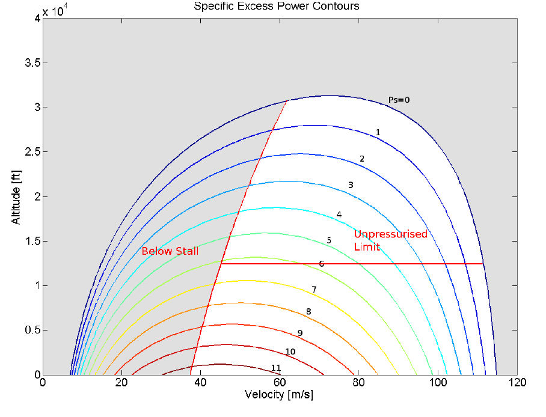
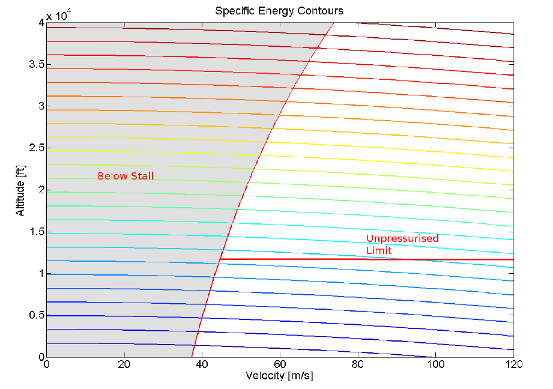
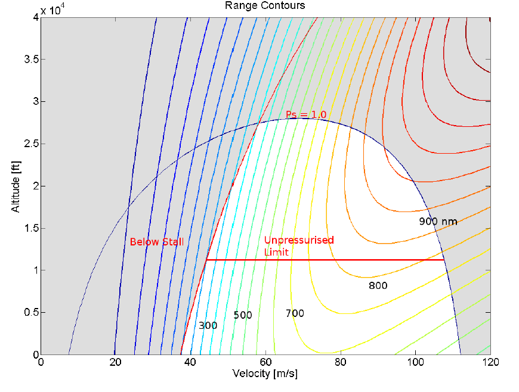
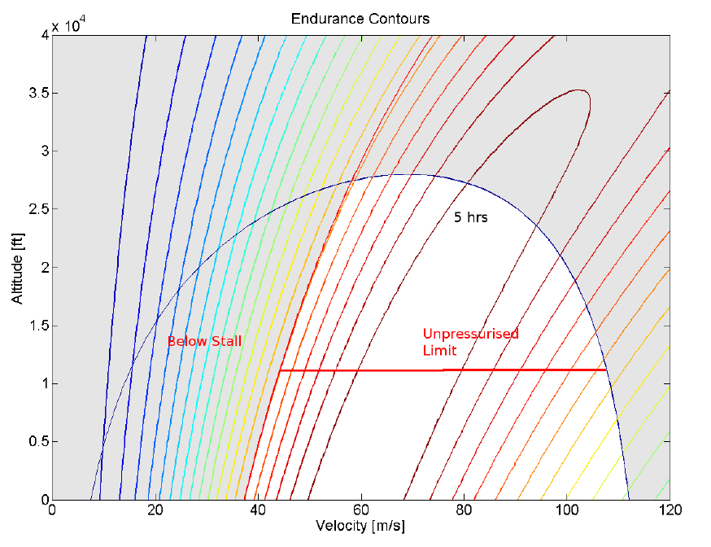
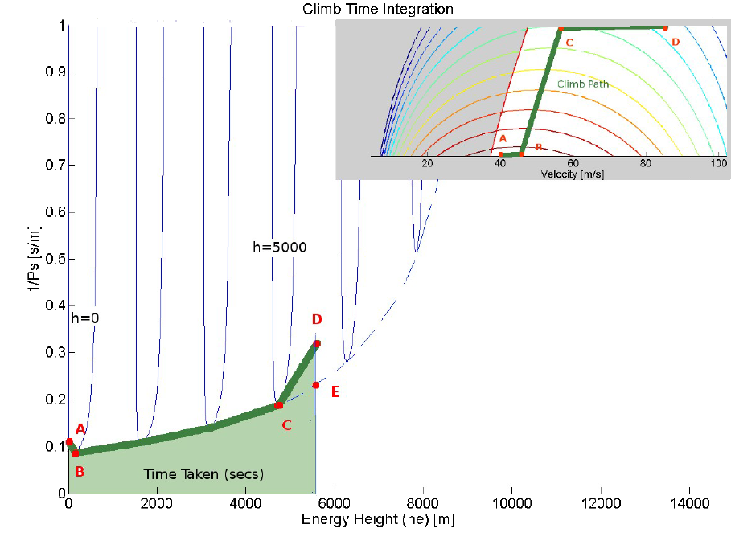

PERFORMANCE ENVELOPES
The variation of aircraft performance parameters such as climb rate, acceleration capability, range vary significantly based on aircraft speed and altitude. To correctly determine the optimum operation of the aircraft, the performance measures should be mapped over the full operating range of the aircraft.
As seen in the climb section one important performance parameter is Specific Excess power ($P_s$). Another is specific Energy ($h_e$). The energy ($E$) of an aircraft is made up of a potential component ($mgh$) and a dynamic component ($½mV^2$).
$$E-mgh+1/2mV^2$$
Specific energy ($h_e$) is the energy per unit weight,
$$h_e=E/W=h+1/2 V^2/g$$
The energy and power of the vehicle are related by the fact that power is the rate of change of energy. Hence specific excess power is the rate of change of specific energy for a vehicle.
$$P_s={dh_e}/{dt}={dh}/{dt}+{dV^2/{2g}}/{dt}$$
hence
$$P_s={dh}/{dt}+V/g {dV}/{dt}$$
This is an extension of what was found for a constant speed climb and shows that power is also available for aircraft acceleration.
To truly determine the capability of the vehicle, specific excess power needs to be mapped over the full range of velocity and altitude for a vehicle. This produces a specific excess power envelope that is effectively contours of constant specific excess power for a range of velocities and altitudes.

A sample envelope is shown for the DHC-6 twin engine aircraft. The method of obtaining the excess power envelopes is numerically based and a simple MATLAB code is used to perform these contouring functions.
Similarly, an envelope for specific energy can be produced that maps lines along which the aircraft can move with any change of thrust setting and hence with no requirement for excess power. The aircraft can trade potential energy (height) for kinetic energy (speed).

As well a maximum range envelope can be produced that maps the value of best achievable range (km) over the operational space.

And finally an endurance envelope,

By inspection of these graphical results the best flight positions can be determined and the paths with in the envelope to reach these can be estimated. In the above example the location for best endurance flight is 60 m/s at sea level, whereas the location for best range flight is 85 m/s at the pressurisation ceiling of 10,000ft. The best flight path can be determined by analysing the power envelope in a manner to identify time or fuel used to climb. For example, assuming a constant maximum throttle setting and then looking for a minimum time climb flight path would be one method of optimising climb.As excess power ($P_s$) is the rate of change of specific energy ($h_e$) then
$$P_s={dh_e}/{dt}$$
or
$$dt=1/P_s.dh_e$$
thus
$$\text"time"=∫dt=∫1/P_s.dh_e$$
Hence time taken to climb is the area under a
graph of specific energy ($he$) versus ($1\/Ps$)
for points along the path.

A simple numerical method of finding the path and optimising so as to minimise climb, is to choose a selection of different paths and to look at the limiting cases which minimise the area.
Shown in the above figure, are paths of ($1\/Ps$) versus ($he$) for possible flight options where the aircraft is climbing at particular altitude but varying velocities (Blue) with altitude steps of several 1000 ft.
If a flight path is chosen so that it lies on the perimeter of this map then a minimum time will be taken. From take-off at (A) the aircraft should accelerate to the velocity giving maximum climb rate (B). It should then climb at the best rates (maximum $P_s$) until it reaches the cruise altitude (C). The options are then to accelerate at this altitude to cruise speed (D) or to keep climbing to reach the specific energy height for the cruise point (E). At (E), the vehicle can then revert to cruise thrust and descend to cruise altitude (D) at the required higher velocity by trading potential energy for kinetic. This alternate end path will minimise the time at high climb thrust settings.